Technical Specification Group Radio Access Network;
Measurements of User Equipment (UE) Over-the-Air (OTA) performance
for NR FR1;
Total Radiated Power (TRP) and Total Radiated Sensitivity (TRS) test
methodology
(Release 17)
The present document has been developed within the
3rd Generation Partnership Project (3GPP TM) and
may be further elaborated for the purposes of 3GPP.
The present document has not been subject to any approval process by the
3GPP Organizational Partners and shall not be implemented.
This Specification is provided for future development work within 3GPP
only. The Organizational Partners accept no liability for any use of
this Specification.
Specifications and Reports for implementation of the 3GPP TM
system should be obtained via the 3GPP Organizational Partners’
Publications Offices.
UMTS™ is a Trade Mark of ETSI registered for the benefit of its
members
3GPP™ is a Trade Mark of ETSI registered for the benefit of its
Members and of the 3GPP Organizational Partners
LTE™ is a Trade Mark of ETSI registered for the benefit of its Members
and of the 3GPP Organizational Partners
GSM® and the GSM logo are registered and owned by the GSM
Association
This Technical Report has been produced by the 3rd
Generation Partnership Project (3GPP).
The contents of the present document are subject to continuing work
within the TSG and may change following formal TSG approval. Should the
TSG modify the contents of the present document, it will be re-released
by the TSG with an identifying change of release date and an increase in
version number as follows:
Version x.y.z
where:
x the first digit:
1 presented to TSG for information;
2 presented to TSG for approval;
3 or greater indicates TSG approved document under change
control.
Y the second digit is incremented for all changes of substance, i.e.
technical enhancements, corrections, updates, etc.
z the third digit is incremented when editorial only changes have
been incorporated in the document.
In the present document, modal verbs have the following meanings:
shall indicates a mandatory requirement to do
something
shall not indicates an interdiction (prohibition) to
do something
The constructions “shall” and “shall not” are confined to the context
of normative provisions, and do not appear in Technical Reports.
The constructions “must” and “must not” are not used as substitutes
for “shall” and “shall not”. Their use is avoided insofar as possible,
and they are not used in a normative context except in a direct citation
from an external, referenced, non-3GPP document, or so as to maintain
continuity of style when extending or modifying the provisions of such a
referenced document.
Should indicates a recommendation to do
something
should not indicates a recommendation not to do
something
may indicates permission to do something
need not indicates permission not to do
something
The construction “may not” is ambiguous and is not used in normative
elements. The unambiguous constructions “might not” or “shall not” are
used instead, depending upon the meaning intended.
Can indicates that something is possible
cannot indicates that something is impossible
The constructions “can” and “cannot” are not substitutes for “may”
and “need not”.
Will indicates that something is certain or expected
to happen as a result of action taken by an agency the behaviour of
which is outside the scope of the present document
will not indicates that something is certain or
expected not to happen as a result of action taken by an agency the
behaviour of which is outside the scope of the present document
might indicates a likelihood that something will
happen as a result of action taken by some agency the behaviour of which
is outside the scope of the present document
might not indicates a likelihood that something will
not happen as a result of action taken by some agency the behaviour of
which is outside the scope of the present document
In addition:
is (or any other verb in the indicative mood)
indicates a statement of fact
is not (or any other negative verb in the indicative
mood) indicates a statement of fact
The constructions “is” and “is not” do not indicate requirements.
1 Scope
The present document is a technical report for FR1 Total Radiated
Power (TRP) and Total Radiated Sensitivity (TRS) test methodology, for
NR standalone (SA) and NR non-standalone (NSA) operation mode.
2 References
The following documents contain provisions which, through reference
in this text, constitute provisions of the present document.
- References are either specific (identified by date of publication,
edition number, version number, etc.) or non‑specific.
- For a specific reference, subsequent revisions do not apply.
- For a non-specific reference, the latest version applies. In the
case of a reference to a 3GPP document (including a GSM document), a
non-specific reference implicitly refers to the latest version of that
document in the same Release as the present document.
[1] 3GPP TR 21.905: “Vocabulary for 3GPP Specifications”.
[2] 3GPP TR 38.827: “Study on radiated metrics and test methodology
for the verification of multi-antenna reception performance of NR User
Equipment (UE)”.
[3] 3GPP TS 38.101-1: “NR; User Equipment (UE) radio transmission and
reception; Part 1: Range 1 Standalone”.
[4] 3GPP TS 38.101-3: “NR; User Equipment (UE) radio transmission and
reception; Part 3: Range 1 and Range 2 Interworking operation with other
radios”.
[5] 3GPP TS 38.521-1: “NR; User Equipment (UE) conformance
specification; Radio transmission and reception; Part 1: Range 1
Standalone”.
[6] 3GPP TS 38.521-3: “NR; User Equipment (UE) conformance
specification; Radio transmission and reception; Part 3: Range 1 and
Range 2 Interworking operation with other radios”.
[7] 3GPP TS 38.508-1: “5GS; User Equipment (UE) conformance
specification; Part 1: Common test environment “.
[8] 3GPP TR 25.914: “Measurements of radio performances for UMTS
terminals in speech mode”.
[9] IEEE Std 149: “IEEE Standard Test Procedures for Antennas”,
IEEE.
[10] JCGM 100:2008: “Evaluation of measurement data — Guide to the
expression of uncertainty in measurement”.
[11] ETSI TR 102 273-1-1: “Electromagnetic compatibility and Radio
spectrum Matters (ERM); Improvement on Radiated Methods of Measurement
(using test site) and evaluation of the corresponding measurement
uncertainties; Part 1: Uncertainties in the measurement of mobile radio
equipment characteristics; Sub-part 1: Introduction”.
[12] ETSI TR 100 028-2: “ElectroMagnetic Compatibility and Radio
Spectrum Matters (ERM); Uncertainties in the measurement of mobile radio
equipment characteristics; Part 2”.
[13] ETSI TR 102 273-1-2: “Electromagnetic compatibility and Radio
spectrum Matters (ERM); Improvement on Radiated Methods of Measurement
(using test site) and evaluation of the corresponding measurement
uncertainties; Part 1: Uncertainties in the measurement of mobile radio
equipment characteristics; Sub-part 2: Examples and annexes”.
[14] CTIA Certification™ OTA Test Plan: “ CTIA Certification Test
Plan for Wireless Device Over-the-Air Performance, Version 3.9.X “, https://ctiacertification.org/test-plans/
[15] Foegelle, M.D., “The Surface Standard Deviation Method for TRP
Measurement Uncertainty”, 25th Proceedings of the Antenna
Measurement Techniques Association (AMTA 2003), A03-027
[16] 3GPP TR 37.902: “Measurements of User Equipment (UE) radio
performances for LTE/UMTS terminals; Total Radiated Power (TRP) and
Total Radiated Sensitivity (TRS) test “.
[17] 3GPP TS 37.544: “Universal Terrestrial Radio Access (UTRA) and
Evolved Universal Terrestrial Radio Access (E-UTRA); User Equipment (UE)
Over The Air (OTA) performance; Conformance testing “.
3 Definitions of
terms, symbols and abbreviations
3.1 Terms
For the purposes of the present document, the terms given in 3GPP
TR 21.905 [1] and the following apply. A term defined in the present
document takes precedence over the definition of the same term, if any,
in 3GPP TR 21.905 [1].
Definition format (Normal)
<defined term>: <definition>.
Example: text used to clarify abstract rules by
applying them literally.
3.2 Symbols
For the purposes of the present document, the following symbols
apply:
Symbol format (EW)
<symbol> <Explanation>
3.3 Abbreviations
For the purposes of the present document, the abbreviations given in
3GPP TR 21.905 [1] and the following apply. An abbreviation defined in
the present document takes precedence over the definition of the same
abbreviation, if any, in 3GPP TR 21.905 [1].
DUT Device Under Test
EIRP Effective Isotropic Radiated Power
EUT Equipment Under Test
FR1 Frequency Range 1
FS Free Space
LEE Laptop Embedded Equipment
LME Laptop Mounted Equipment
NSA Non-Standalone, a mode of operation where operation of an other
radio is assisted with an other radio
OTA Over The Air
QZ Quiet Zone
SA Standalone
SS System Simulator
TAA Time-Averaging Algorithm
TAS Tx Antenna Switching
TRP Total Radiated Power
TRS Total Radiated Sensitivity
UE User Equipment
4 General
4.1 Device types
The following device types are within the scope of FR1 TRP TRS
WI:
- Smartphone
- Considering Ues with antenna configurations of 1Tx, 2Tx, 2 Rx and 4
Rx
- Tablet
- Laptop embedded equipment (LEE)
- Laptop mounted equipment (LME)
The development of test methodology aspects shall initially focus on
the smartphone device type.
4.2 Testing configuration
4.2.1 UE use scenarios for
TRP TRS test
The following use scenarios are considered for TRP TRS test:
- Talk mode using head & hand phantom for narrow devices between
56 mm and 72 mm and for wide devices with a width >72 mm and <92
mm.
- Browsing mode using hand phantom for narrow and wide phones
- Free Space for devices not used in talk or browsing mode
For smartphone, head/hand phantoms testing configuration is the first
priority. How to select Talk mode or Browsing mode is FFS.
For other device types, free space (FS) testing configuration is the
first priority.
4.2.2 UE mechanical mode
description
The mechanical modes of a device under test (DUT) are declared by the
manufacturer. A DUT shall have at least one mechanical mode. If only one
mode is supported, then this is defined as the primary. If multiple
modes are supported, the manufacturer can declare different primary
mechanical modes applicable for different user scenarios, e.g.,
different primary mechanical mode for Browsing mode usage and Talk mode
usage for the same UE.
4.3 Testing bands
4.3.1 General
The frequency ranges in which NR can operate are identified as
described in Table 4.3.1-1.
Table 4.3.1-1: Definition of frequency ranges
Frequency range designation
Corresponding frequency range
FR1
410 MHz – 7125 MHz
FR2
24250 MHz – 52600 MHz
The present technical report covers FR1 operating bands and FR1
non-standalone (NSA) operation mode with E-UTRA.
4.3.2 Operating bands
Operating bands for NR FR1 are defined in Table 5.2-1 in TS 38.101-1
[3]. The operating bands for EN-DC are defined in Clause 5.5B in TS
38.101-3 [4].
4.3.3 Test parameters for each
band
The detailed testing parameters for each band is defined in Table
4.3.3-1 and Table 4.3.3-2.
Table 4.3.3-1: NR FR1 TRP measurement parameters
NR Band
CBW
[MHz]
SCS (kHz)
UL modulation
Range
UL Carrier centre
[ARFCN]
UL Carrier Center (MHz)
DL Carrier centre
[ARFCN]
DL Carrier Center (MHz)
UL RB Allocation
(LCRB @ RBstart)
DL configuration
n1
15
15
DFT-s-OFDM
QPSK
Low
385500
1927.5
423500
2117.5
36@18
N/A
Mid
390000
1950
428000
2140
High
394500
1972.5
432500
2162.5
n2
15
15
DFT-s-OFDM
QPSK
Low
371500
1857.5
387500
1937.5
36@18
N/A
Mid
376000
1880
392000
1960
High
380500
1902.5
396500
1982.5
n3
20
15
DFT-s-OFDM
QPSK
Low
344000
1720
363000
1815
50@25
N/A
Mid
349500
1747.5
368500
1842.5
High
355000
1775
374000
1870
n5
15
15
DFT-s-OFDM
QPSK
Low
166300
831.5
175300
876.5
36@18
N/A
Mid
167300
836.5
176300
881.5
High
168300
841.5
177300
886.5
n7
15
15
DFT-s-OFDM
QPSK
Low
501500
2507.5
525500
2627.5
36@18
N/A
Mid
507000
2535
531000
2655
High
512500
2562.5
536500
2682.5
n8
15
15
DFT-s-OFDM
QPSK
Low
177500
887.5
186500
932.5
36@18
N/A
Mid
179500
897.5
188500
942.5
High
181500
907.5
190500
952.5
n12
10
15
DFT-s-OFDM
QPSK
Low
140800
704
146800
734
25@12
N/A
Mid
141500
707.5
147500
737.5
High
142200
711
148200
741
n14
10
15
DFT-s-OFDM
QPSK
Low
158600
793
152600
763
25@12
N/A
Mid
High
n20
15
15
DFT-s-OFDM
QPSK
Low
167900
839.5
159700
798.5
36@18
N/A
Mid
169400
847
161200
806
High
170900
854.5
162700
813.5
n25
15
15
DFT-s-OFDM
QPSK
Low
371500
1857.5
387500
1937.5
36@18
N/A
Mid
376500
1882.5
392500
1962.5
High
381500
1907.5
397500
1987.5
n26
10
15
DFT-s-OFDM
QPSK
Low
163800
819
172800
864
25@12
N/A
Mid
166300
831.5
175300
876.5
High
168800
844
177800
889
n28
20
15
DFT-s-OFDM
QPSK
Low
142600
713
153600
768
50@25
N/A
Mid
145600
728
156600
783
High
147600
738
158600
793
n30
10
15
DFT-s-OFDM
QPSK
Low
462000
2310
471000
2355
25@12
N/A
Mid
High
n34
10
15
DFT-s-OFDM
QPSK
Low
403000
2015
403000
2015
25@12
N/A
Mid
403500
2017.5
403500
2017.5
High
404000
2020
404000
2020
n38
15
15
DFT-s-OFDM
QPSK
Low
515500
2577.5
515500
2577.5
36@18
N/A
Mid
519000
2595
519000
2595
High
522500
2612.5
522500
2612.5
n39
20
15
DFT-s-OFDM
QPSK
Low
378000
1890
378000
1890
50@25
N/A
Mid
380000
1900
380000
1900
High
382000
1910
382000
1910
n40
30
15
DFT-s-OFDM
QPSK
Low
463000
2315
463000
2315
TBD
N/A
Mid
470000
2350
470000
2350
High
477000
2385
477000
2385
n41
100
30
DFT-s-OFDM
QPSK
Low
509202
2546.01
509202
2546.01
135@67
N/A
Mid
518598
2592.99
518598
2592.99
High
528000
2640
528000
2640
n48
20
15
DFT-s-OFDM
QPSK
Low
637334
3560.01
637334
3560.01
50@25
N/A
Mid
641666
3624.99
641666
3624.99
High
646000
3690
646000
3690
n50
20
15
DFT-s-OFDM
QPSK
Low
288400
1442
288400
1442
50@25
N/A
Mid
294900
1474.5
294900
1474.5
High
301400
1507
301400
1507
n51
5
15
DFT-s-OFDM
QPSK
Low
285900
1429.5
285900
1429.5
12@6
N/A
Mid
High
n53
10
15
DFT-s-OFDM
QPSK
Low
497700
2488.5
497700
2488.5
25@12
N/A
Mid
497860
2489.3
497860
2489.3
High
498000
2490
498000
2490
n65
15
15
DFT-s-OFDM
QPSK
Low
423500
2117.5
423500
2117.5
36@18
N/A
Mid
431000
2155
431000
2155
High
438500
2192.5
438500
2192.5
n66
20 (20+20)
15
DFT-s-OFDM
QPSK
Low
344000
1720
424000
2120
50@25
N/A
Mid
349000
1745
429000
2145
High
354000
1770
434000
2170
n70
15 (15+15)
15
DFT-s-OFDM
QPSK
Low
340500
1702.5
400500
2002.5
36@18
N/A
Mid
High
n71
10
15
DFT-s-OFDM
QPSK
Low
133600
668
124400
622
25@12
N/A
Mid
136100
680.5
126900
634.5
High
138600
693
129400
647
n74
15
15
DFT-s-OFDM
QPSK
Low
286900
1434.5
296500
1482.5
36@18
N/A
Mid
289700
1448.5
299300
1496.5
High
292500
1462.5
302100
1510.5
n77
100
30
DFT-s-OFDM
QPSK
Low
623334
3350.01
623334
3350.01
135@67
N/A
Mid
650000
3750
650000
3750
High
676666
4149.99
676666
4149.99
n78
100
30
DFT-s-OFDM
QPSK
Low
623334
3350.01
623334
3350.01
135@67
N/A
Mid
636666
3549.99
636666
3549.99
High
650000
3750
650000
3750
n79
100
30
DFT-s-OFDM
QPSK
Low
696668
4450.02
696668
4450.02
135@67
N/A
Mid
713334
4700.01
713334
4700.01
High
730000
4950
730000
4950
n80
20
15
DFT-s-OFDM
QPSK
Low
344000
1720
N/A
N/A
50@25
N/A
Mid
349500
1747.5
N/A
N/A
High
355000
1775
N/A
N/A
n81
15
15
DFT-s-OFDM
QPSK
Low
177500
887.5
N/A
N/A
36@18
N/A
Mid
179500
897.5
N/A
N/A
High
181500
907.5
N/A
N/A
n82
15
15
DFT-s-OFDM
QPSK
Low
167900
839.5
N/A
N/A
36@18
N/A
Mid
169400
847
N/A
N/A
High
170900
854.5
N/A
N/A
n83
15
15
DFT-s-OFDM
QPSK
Low
142100
710.5
N/A
N/A
36@18
N/A
Mid
145100
725.5
N/A
N/A
High
148100
740.5
N/A
N/A
n84
15
15
DFT-s-OFDM
QPSK
Low
385500
1927.5
N/A
N/A
36@18
N/A
Mid
390000
1950
N/A
N/A
High
394500
1972.5
N/A
N/A
n86
20
15
DFT-s-OFDM
QPSK
Low
344000
1720
N/A
N/A
50@25
N/A
Mid
349000
1745
N/A
N/A
High
354000
1770
N/A
N/A
N95
10
15
DFT-s-OFDM
QPSK
Low
403000
2015
N/A
N/A
50@25
N/A
Mid
403500
2017.5
N/A
N/A
High
404000
2020
N/A
N/A
Table 4.3.3-2: NR FR1 TRS measurement parameters
NR Band
CBW
(MHz)
SCS (kHz)
DL modulation
UL modulation
Range
UL Carrier centre
[ARFCN]
UL Carrier Center (MHz)
DL Carrier centre
[ARFCN]
DL Carrier Center (MHz)
UL RB Allocation
(LCRB @ RBstart)
DL Configuration (FULL RB, LCRB @
RBstart)
n1
15
15
CP-OFDM QPSK
DFT-s-OFDM
QPSK
Low
385500
1927.5
423500
2117.5
75@4
79@0
Mid
390000
1950
428000
2140
High
394500
1972.5
432500
2162.5
n2
15
15
CP-OFDM QPSK
DFT-s-OFDM
QPSK
Low
371500
1857.5
387500
1937.5
50@29
79@0
Mid
376000
1880
392000
1960
High
380500
1902.5
396500
1982.5
n3
20
15
CP-OFDM QPSK
DFT-s-OFDM
QPSK
Low
344000
1720
363000
1815
50@56
106@0
Mid
349500
1747.5
368500
1842.5
High
355000
1775
374000
1870
n5
15
15
CP-OFDM QPSK
DFT-s-OFDM
QPSK
Low
166300
831.5
175300
876.5
25@54
79@0
Mid
167300
836.5
176300
881.5
High
168300
841.5
177300
886.5
n7
15
15
CP-OFDM QPSK
DFT-s-OFDM
QPSK
Low
501500
2507.5
525500
2627.5
75@4
79@0
Mid
507000
2535
531000
2655
High
512500
2562.5
536500
2682.5
n8
15
15
CP-OFDM QPSK
DFT-s-OFDM
QPSK
Low
177500
887.5
186500
932.5
25@54
79@0
Mid
179500
897.5
188500
942.5
High
181500
907.5
190500
952.5
n12
10
15
CP-OFDM QPSK
DFT-s-OFDM
QPSK
Low
140800
704
146800
734
20@32
52@0
Mid
141500
707.5
147500
737.5
High
142200
711
148200
741
n14
10
15
CP-OFDM QPSK
DFT-s-OFDM
QPSK
Low
158600
793
152600
763
20@32
52@0
Mid
High
n20
15
15
CP-OFDM QPSK
DFT-s-OFDM
QPSK
Low
167900
839.5
159700
798.5
20@11
79@0
Mid
169400
847
161200
806
High
170900
854.5
162700
813.5
n25
15
15
CP-OFDM QPSK
DFT-s-OFDM
QPSK
Low
371500
1857.5
387500
1937.5
50@29
79@0
Mid
376500
1882.5
392500
1962.5
High
381500
1907.5
397500
1987.5
n26
10
15
CP-OFDM QPSK
DFT-s-OFDM
QPSK
Low
163800
819
172800
864
25@27
52@0
Mid
166300
831.5
175300
876.5
High
168800
844
177800
889
n28
20
15
CP-OFDM QPSK
DFT-s-OFDM
QPSK
Low
142600
713
153600
768
25@81
106@0
Mid
145600
728
156600
783
High
147600
738
158600
793
n30
10
15
CP-OFDM QPSK
DFT-s-OFDM
QPSK
Low
462000
2310
471000
2355
20@32
52@0
Mid
High
n34
10
15
CP-OFDM QPSK
DFT-s-OFDM
QPSK
Low
403000
2015
403000
2015
50@0
52@0
Mid
403500
2017.5
403500
2017.5
High
404000
2020
404000
2020
n38
15
15
CP-OFDM QPSK
DFT-s-OFDM
QPSK
Low
515500
2577.5
515500
2577.5
75@0
79@0
Mid
519000
2595
519000
2595
High
522500
2612.5
522500
2612.5
n39
20
15
CP-OFDM QPSK
DFT-s-OFDM
QPSK
Low
378000
1890
378000
1890
100@0
106@0
Mid
380000
1900
380000
1900
High
382000
1910
382000
1910
n40
30
15
CP-OFDM QPSK
DFT-s-OFDM
QPSK
Low
463000
2315
463000
2315
160@0
160@0
Mid
470000
2350
470000
2350
High
477000
2385
477000
2385
n41
100
30
CP-OFDM QPSK
DFT-s-OFDM
QPSK
Low
509202
2546.01
509202
2546.01
270@0
273@0
Mid
518598
2592.99
518598
2592.99
High
528000
2640
528000
2640
n48
20
15
CP-OFDM QPSK
DFT-s-OFDM
QPSK
Low
637334
3560.01
637334
3560.01
100@0
106@0
Mid
641666
3624.99
641666
3624.99
High
646000
3690
646000
3690
n50
20
15
CP-OFDM QPSK
DFT-s-OFDM
QPSK
Low
288400
1442
288400
1442
100@0
106@0
Mid
294900
1474.5
294900
1474.5
High
301400
1507
301400
1507
n51
5
15
CP-OFDM QPSK
DFT-s-OFDM
QPSK
Low
285900
1429.5
285900
1429.5
25@0
25@0
Mid
High
n53
10
15
CP-OFDM QPSK
DFT-s-OFDM
QPSK
Low
497700
2488.5
497700
2488.5
50@0
52@0
Mid
497860
2489.3
497860
2489.3
High
498000
2490
498000
2490
n65
15
15
CP-OFDM QPSK
DFT-s-OFDM
QPSK
Low
423500
2117.5
423500
2117.5
75@4
79@0
Mid
431000
2155
431000
2155
High
438500
2192.5
438500
2192.5
n66
20 (20+20)
15
CP-OFDM QPSK
DFT-s-OFDM
QPSK
Low
344000
1720
424000
2120
100@6
106@0
Mid
349000
1745
429000
2145
High
354000
1770
434000
2170
n70
15
15
CP-OFDM QPSK
DFT-s-OFDM
QPSK
Low
340500
1702.5
400500
2002.5
75@4
79@0
Mid
High
n71
10
15
CP-OFDM QPSK
DFT-s-OFDM
QPSK
Low
133600
668
124400
622
25@0
52@0
Mid
136100
680.5
126900
634.5
High
138600
693
129400
647
n74
15
15
CP-OFDM QPSK
DFT-s-OFDM
QPSK
Low
286900
1434.5
296500
1482.5
25@54
79@0
Mid
289700
1448.5
299300
1496.5
High
292500
1462.5
302100
1510.5
n75 SDL
15
15
CP-OFDM QPSK
DFT-s-OFDM
QPSK
Low
N/A
N/A
287900
1439.5
NA
79@0
Mid
N/A
N/A
294900
1474.5
High
N/A
N/A
301900
1509.5
n76 SDL
5
15
CP-OFDM QPSK
DFT-s-OFDM
QPSK
Low
N/A
N/A
285900
1429.5
NA
25@0
Mid
High
n77
100
30
CP-OFDM QPSK
DFT-s-OFDM
QPSK
Low
623334
3350.01
623334
3350.01
270@0
273@0
Mid
650000
3750
650000
3750
High
676666
4149.99
676666
4149.99
n78
100
30
CP-OFDM QPSK
DFT-s-OFDM
QPSK
Low
623334
3350.01
623334
3350.01
270@0
273@0
Mid
636666
3549.99
636666
3549.99
High
650000
3750
650000
3750
n79
100
30
CP-OFDM QPSK
DFT-s-OFDM
QPSK
Low
696668
4450.02
696668
4450.02
270@0
273@0
Mid
713334
4700.01
713334
4700.01
High
730000
4950
730000
4950
Table 4.3.3-3: Measurement parameters for example inter-band EN-DC
band combinations (two bands)
EN-DC
configuration
E-UTRA configurations
NR configurations
DC_3A_n28A
Note1
Note2
DC_2A_n41A
Note1
Note2
DC_1A_n78A
Note1
Note2
DC_1A_n79A
Note1
Note2
Note 1: As per TR 37.902 [16], Section 6.4
(Measurement frequencies).
Note 2: As per Table 4.3.3-1 and Table 4.3.3-2 in this technical
report. The measurement parameters for NR Low Mid High ranges correspond
to E-UTRA Low Mid High ranges respectively.
Principle of EN-DC combinations selection for TRP TRS OTA
testing:
1) Focus on the performance of the NR carrier and do not consider
multiple permutations between different LTE bands and NR band under
test, i.e., for each NR band, only select one EN-DC band
combination.
2) For UE supporting multiple EN-DC band combinations for the same NR
band, consider only those EN-DC configurations which have no MSD impact
on either LTE or NR, i.e., the selected EN-DC combination should be no
MSD issue identified in TS 38.101-3 Section 7.3B.2.3 (Inter-band EN-DC
within FR1).
5 Performance metrics
5.1 Definition of
the Total Radiated Power (TRP)
Transmitter power measurements shall be performed using the Total
Radiated Power (TRP) as the measurement metric.
This definition will be used to calculate the Total Radiated Power
(TRP) value of NR FR1 DUT.
The TRP with Anechoic Chamber method is defined as:
Table 5.1-1 Weights for Clenshaw-Curtis Quadrature with
∆θ=15o
Clenshaw-Curtis
θ [deg]
Weights
0
0.007
15
0.0661
30
0.1315
45
0.1848
60
0.227
75
0.2527
90
0.262
105
0.2527
120
0.227
135
0.1848
150
0.1315
165
0.0661
180
0.007
5.2 Definition of
Total Radiated Sensitivity (TRS)
Receiver sensitivity measurements shall be performed using data
throughput as the measurement metric. The DUT’s receiver sensitivity
corresponds to the minimum downlink signal power required to provide a
data throughput rate greater than or equal to 95% of the maximum
throughput of the reference measurement channel (RMC).
This definition will be used to calculate the Total Radiated
Sensitivity (TRS) value of NR FR1 DUT.
The TRS with Anechoic Chamber method is defined as:
Where the effective isotropic sensitivity (EIS) is defined as the
minimum power level at which the throughput exceeds or equal to 95% of
the maximum throughput of the specified RMC, at each sampling point.
Where EISθ and EISϕ are the EIS in the
corresponding θ and ϕ polarizations.
The summation form based on the sinθ⋅∆θ weights of TRS with Anechoic
Chamber method defined as:
Table 5.2-1 Weights for Clenshaw-Curtis Quadrature with
∆θ=30o
Clenshaw-Curtis
θ [deg]
Weights
0
0.007
30
0.1315
60
0.227
90
0.262
120
0.227
150
0.1315
180
0.007
6 UE positioning guidelines
6.1 Free space
For Free space configuration, the centre of the reference coordinate
system shall be aligned with the geometric centre of the DUT in order to
minimize the offset between antenna arrays integrated at any position of
the UE and the centre of the quiet zone.
Table 6.1-1: UE positioning for Free space
Test condition
DUT
orientation
Diagram
Free space
DUT
α = 0º;
β = 0º;
γ = 0º
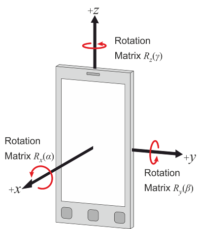
6.2 Hand phantom only (Browsing
mode)
According to the UE use scenarios for TRP TRS test defined in Section
4.2.1, the positioning specified in this clause is used for the test
cases for Browsing Mode with Hand Phantom. The characteristics of the
Hand Phantom are specified in Annex D. Browsing mode is used to simulate
user cases were the DUT is held in hand, but not pressed against ear
e.g. web browsing and navigation. The DUT shall be mounted in a suitable
hand phantom and oriented such that the DUT’s main display is tilted 45
degrees from vertical:
- Wide Grip Hand for UE with Width >72mm and ≤92mm
- PDA Grip Hand for UE with Width ≥56mm and ≤72mm
6.2.1 Wide Grip Hand
This positioning guideline is suitable for DUTs with width >72mm
and ≤92mm.
The positioning guideline defined in CTIA Certification OTA Test Plan
section A.1.4.4 [14], is used for FR1 TRP TRS testing for UE with Width
>72mm and ≤92mm in this technical report.
This positioning guideline is suitable for DUTs with width ≥56mm and
≤72mm.
To help achieve a consistent positioning, the DUT is aligned to a PDA
palm spacer. No alignment tool is required. The PDA spacer features side
and bottom walls to ensure consistent alignment of DUTs of various
sizes.
1. Place the DUT on the PDA spacer between the fingers and align the
DUT to the side wall of the PDA.
2. If the DUT is shorter than 135 mm, then align the top of the DUT
with the top of the PDA spacer. Otherwise, align the bottom of the DUT
with the bottom wall of the PDA spacer.
3. While keeping the DUT in the hand phantom in the position defined
in previous steps, place the DUT and the hand phantom against the head
phantom in such way that the DUT is in 6°tilt angle as described in
Subclause 4.3.3.
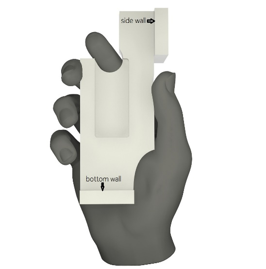
Figure 6.2.2-1: Right-handed PDA Grip hand phantom with a spacer
NOTE: Use left-handed (mirror-imaged) spacers with left-handed
phantoms.
6.3 Head and Hand phantom (Talk
Mode)
6.3.1 General
According to the UE use scenarios for TRP TRS test defined in Section
4.2.1, the positioning specified in this clause is used for the test
cases for Talk Mode using Head & Hand Phantom. The characteristics
of the Hand Phantom and Head Phantom are specified in Annex D.
Talk mode is used to simulate user cases where the DUT is placed into
a hand phantom, which is holding the DUT against the SAM head phantom,
presenting a realistic voice call operation of the DUT. Same as Browsing
mode, the DUT for talk mode shall also be mounted in a suitable hand
phantom:
- Wide Grip Hand for UE with Width >72mm and ≤92mm
- PDA Grip Hand for UE with Width ≥56mm and ≤72mm
In this section, the procedure provides the guideline on how to place
the DUT+hand against the head phantom. The detailed DUT positioning into
hand phantom for talk mode is defined in section 6.3.2 and 6.3.3.
For talk mode, the DUT is attached to the head phantom in “cheek”
position. The DUT performance is measured on both left and right side of
the head. Three points as shown in Figure 6.3.1-1 define the reference
plane: centre of the right ear piece (RE), centre of the left ear piece
(LE) and centre of mouth (M).
Definition of the ‘Cheek’ position:
1. Align the ear piece of the phone (see Figure 4.3.1-1) at the line
RE-LE. Then, position the DUT beside the phantom so that the vertical
line (see Figure 4.3.1-3) is parallel to the reference plane in Figure
4.3.1-2 and is aligned with the line M-RE on the reference plane (see
Figure 4.3.1-3).
2. Position the DUT so that the ear piece of the DUT touches the ear
piece of the phantom head on the line RE-LE. Tilt the DUT chassis
towards the cheek of the phantom having the vertical line aligned with
the reference plane until any point on the front side of the DUT is in
contact with the cheek or until the contact with the ear is lost.
NOTE: A holder fixture made of e.g. plastic may be used to position
the handset against the phantom.
Figure 6.3.1-1: Reference plane on head phantom, front view
Figure 6.3.1-2: Reference plane on head phantom, side view
In addition, 6°tilt angle from the cheek is being used instead of
having direct contact between the cheek and DUT. A mask may be used to
help configuration of cheek + 6° tilt angle. The mask is a 32 mm wide
conformal strip, created by sweeping the surface of the head phantom
through a 6º rotation about the ear. Direct DUT contact against the mask
thus establishes the required 6º spacing away from the cheek, regardless
of DUT form factor. The material for the head phantom mask spacer shall
have dielectric constant of less than 1.3 and a loss tangent of less
than 0.003. Material additions can be used to help fixing of the mask
spacer onto the head phantom.
6.3.2 Wide Grip Hand and Head
This procedure is suitable for talk mode use with DUTs of width
>72mm and ≤92mm. The positioning of the DUT in the Wide Grip hand for
talk mode is identical to that for browsing mode described in section
6.2.2.
6.3.3 PDA Grip Hand and Head
This procedure is suitable for talk mode use with DUTs of width ≥56mm
and ≤72mm. The positioning of the DUT in the PDA Grip hand for talk mode
is identical to that for browsing mode described in section 6.2.3.
7 Test setup and calibration
7.1 General
7.1.1 Minimum Range Length
This sub-section specifies the minimum range lengths for NR FR1
TRP-TRS OTA systems. The range length is defined as the distance from
the centre of the quiet zone to the aperture of the measurement
probes/antennas, as illustrated in Figure 7.1.1-1.
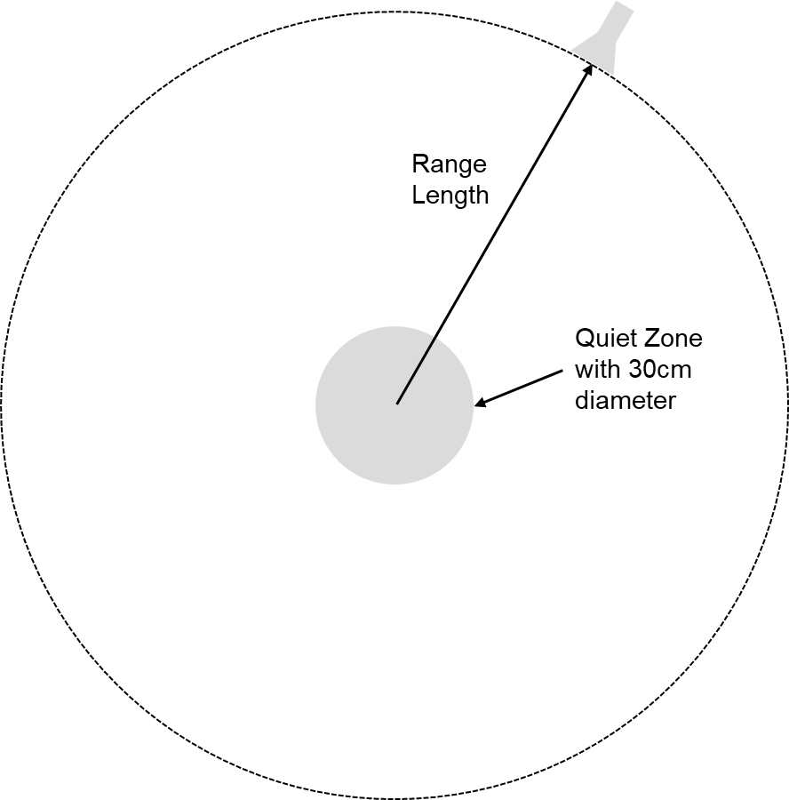
Figure 7.1.1-1: Illustration of range length definition
The minimum range length shall be the maximum of the following three
limits
- The phase uncertainty limit:
RQZ+2Drad2/λ
- The amplitude uncertainty limit: 3D
- The reactive Near-Field limit: RQZ+2λ
where RQZ is defined as the radius of the quiet
zone, i.e., RQZ=D/2, and
Drad is the diameter of the effective radiating
aperture. The minimum range length calculations for D=30cm
quiet zone size TRP-TRS OTA test systems shall assume that
Drad is 30cm below 1GHz and decrease linearly from
30cm to 5cm from 1GHz to 7.125GHz, respectively. The last column of
Table 7.1.1-1 shall be considered the minimum range length for NR FR1
TRP-TRS OTA systems with 30cm quiet zone size.
Table 7.1.1-1: Minimum Range Length for NR FR1 TRP-TRS OTA systems
with 30cm quiet zone size.
F [GHz]
Drad [m]
RQZ+2Drad²/λ
3D = 6RQZ
RQZ+2λ
max(RQZ+2λ,3D,RQZ+2D²/λ)
0.41
0.30
0.40
0.9
1.61
1.61
0.6
0.30
0.51
0.9
1.15
1.15
0.7
0.30
0.57
0.9
1.01
1.01
0.8
0.30
0.63
0.9
0.90
0.90
1
0.30
0.75
0.9
0.75
0.90
1.2
0.29
0.83
0.9
0.65
0.90
1.4
0.28
0.90
0.9
0.58
0.90
1.6
0.28
0.96
0.9
0.52
0.96
1.8
0.27
1.01
0.9
0.48
1.01
2
0.26
1.05
0.9
0.45
1.05
2.2
0.25
1.07
0.9
0.42
1.07
2.4
0.24
1.09
0.9
0.40
1.09
2.6
0.23
1.11
0.9
0.38
1.11
2.8
0.23
1.11
0.9
0.36
1.11
3
0.22
1.10
0.9
0.35
1.10
4
0.18
0.99
0.9
0.30
0.99
5
0.14
0.77
0.9
0.27
0.90
6
0.10
0.52
0.9
0.25
0.90
7
0.06
0.29
0.9
0.24
0.90
7.125
0.05
0.27
0.9
0.23
0.90
7.2 Test setup
For FR1 TRP TRS testing, both Single-antenna and multiple-antennas
anechoic chambers can both be applied. In Figure 7.2-1, an example TRP
TRS test system with combined axes system is presented.
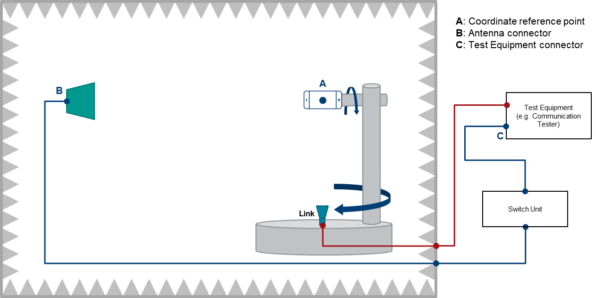
Figure 7.2-1: Example of a FR1 TRP TRS OTA test system with combined
axis
In Figure 7.2-2, an example TRP TRS test system with distributed axes
system is presented.
Figure 7.2-2: Example of a FR1 TRP TRS OTA test system with
distributed axis
7.3 Calibration procedure
The relative power values of the measurement points will be
transformed to absolute radiated power values (in dBm) by performing a
range path loss calibration measurement. The system needs to be
calibrated by using a reference calibration antenna with known gain
values. In the range path loss calibration measurement, the reference
antenna is measured in the same place as the DUT, i.e. the center of the
QZ, and the attenuation of the complete transmission path (\(L_{total}\)) from the DUT to the
measurement receiver/BS simulator is calibrated out.
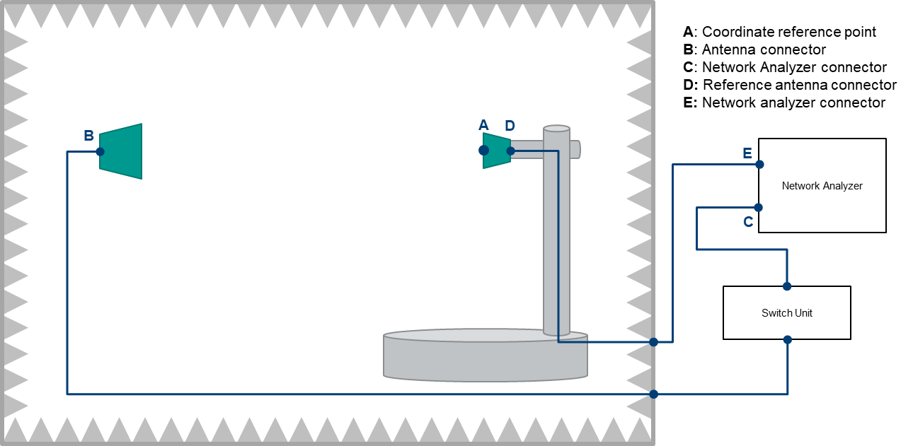
Figure 7.3-1: Example FR1 TRP TRS calibration setup
The calibration measurement is repeated for each measurement path
(two orthogonal polarizations and each signal path). The range path loss
calibration measurement is performed in a two-step process including
total path loss measurement and cable calibration.
Step 1: Cable calibration: the measurement of path loss
LDE\(L_{DE}\), by connecting the
cable from D to E to the two ports of VNA, and measure the cable path
loss.
Step 2: Total path loss measurement: the measurement of total path
loss LBC;
1. Place the reference calibration antenna (e.g. reference dipole) in
the center of the test zone aligned with θ polarization of the
measurement antenna, connected to a VNA port E, with the other VNA port
C connected to the input of the Switch box – in Figure 7.3-1.
2. Configure the proper output power of VNA.
3. Measure the response LCE\(L_{CE}\ \)of each path from each θ
polarization of the measurement antenna to the reference antenna in the
center of QZ.
4. Repeat the steps 1 to 3 with the reference antenna aligned with
the ϕ polarization of the measurement antenna.
Then, the \(L_{total} = \left( L_{CE} -
L_{DE} + G_{cal} \right)\), Where LDE\(L_{DE}\) is cable loss from D to E. \(G_{cal}\) is the gain or efficiency of the
calibration antenna at the frequency of interest. In TRP and TRS
measurements point C is connected to the calibrated input/output port of
measurement receiver.
This range path loss calibration procedure is common to both SA and
EN-DC measurements.
7.4 Ripple test for Quiet Zone
7.4.1 General
The ripple test procedure is defined in this clause. Frequencies to
be used for ripple test:
Table 7.4.1-1: Frequencies for FR1 ripple test
NR FR1 Bands
Range
Test frequency (MHz)
n71
Low
617MHz
n12, n17, n29, n14, n28
722MHz
n5, n8, n18, n20
836.5MHz
n50, n51, n74
Mid
1575.42MHz
n3, n2, n25, n39
1880MHz
n1, n34, n65
2132.5MHz
n7, n30, n41, n40, n38, n90
2450MHz
n77, n78
High
3600MHz
n79
[4700MHz]
7.4.2 Ripple test procedure
Unwanted reflections and support structure blockage cause a
volumetric ripple to the field magnitude measured by or created by the
measurement antenna as shown in Figure 7.4.2-1, affecting every possible
test point within a desired test volume. By rotating an omnidirectional
antenna through the test volume as illustrated by the red line, this
volumetric ripple may be probed to obtain an estimate of the measurement
uncertainty due to this volumetric error. Note, however, that the
volumetric ripple caused by multipath reflections is related to the
wavelength and the relative path lengths of the direct and reflected
paths to the measurement antenna, and is not inherently a function of
the test volume. As illustrated in Figure 7.4.2-1(left), when the
wavelength is relatively large compared to the test volume, it may not
be possible to probe the entire range of errors that may actually exist
within the test volume. Doing so would require probing an area larger
than the test volume in order to accurately estimate the error within
the test volume. Even when the test volume is several wavelengths in
size, a given evaluation of the ripple may not completely caliper the
worst-case error conditions within the test volume (Figure 7.4.2-1
(right)).
Figure 7.4.2-1: Volumetric ripple and 20cm Phi axis cut
Conversely, field non-uniformities in the test volume caused by
amplitude taper of the measurement antenna and shadowing of portions of
the test volume by support structure are geometric in nature and relate
directly to the size of the test volume and the related factors of the
measurement antenna and support structure. This test procedure attempts
to capture the impact of these effects to within the practical limits of
the available test volume and test equipment expected in the lab.
The quiet zone ripple test covers two cylindrical test volumes, one
for handsets and smaller devices, with or without head and/or hand
phantoms, and a larger volume for testing up to notebook PC sized
devices. The smaller cylinder is 30 cm in diameter, concentric to the
phi axis, and 30 cm tall along the phi axis, centered on the
intersection of the theta and phi axes. The larger cylinder is 50 cm in
diameter, concentric to the phi axis, with the base of the cylinder
coincident with that of the smaller cylinder and a height of 36 cm along
the phi axis. The test consists of a set of individual ripple tests
about the phi- and theta-axes utilizing both electric dipoles and
magnetic loop dipoles to generate uniform omnidirectional dipole-like
patterns about the axis of rotation. Data is measured on the
co-polarized measurement antenna element for each corresponding
test.
For the phi-axis ripple test, each reference antenna is oriented with
its axis parallel to the phi axis at a total of three positions, offset
15 cm perpendicular to the phi axis with 0 cm and ±15 cm offsets
parallel to the phi axis. At each position, the phi axis is rotated 360°
to record the ripple. Each position is labeled by its radial and axial
offset from the center position, (R, Z). See Figure
7.4.2-2 for additional information.
Figure 7.4.2-2: Phi-axis test geometry
For the notebook sized test volume, three additional test positions
are added to the phi-axis test in order to cover the larger test
cylinder. These positions are offset 25 cm perpendicular to the phi axis
with -15, 0, and +21 cm offsets parallel to the phi axis, as shown in
Figure 7.4.2-3.
Figure 7.4.2-3: Phi-axis test geometry for the notebook sized test
volume
For the theta-axis ripple test, each reference antenna is oriented
with its axis parallel to the theta axis at a total of eight positions
on the surface of the cylinder defined above. Defining Cartesian
coordinates (X, Y, Z) with the Z-axis along the phi-axis, the Y-axis
along the theta-axis, and the measurement antenna moving in the XZ plane
relative to the reference antenna used for the ripple test, the test
positions are given as (±15 cm, 0, ±15 cm) and (0, ±15 cm, ±15 cm),
relative to the center of the test volume as shown in Figure 7.4.2-4. At
each position, the theta axis is rotated over as much of 360° as
supported by the system to record the ripple (e.g. ±165°). For systems
that can only move theta in the range of 0-180° or less, the phi axis
may be rotated 180° and a second cut measured to meet or exceed the
±165° range. Each position is labeled by its (X, Y, Z) offset from the
center position.
Figure 7.4.2-4: Theta-axis test geometry
For the notebook sized test volume, eight additional test positions
are added to the theta-axis test in order to cover the larger test
cylinder. These positions are given as (±25 cm, 0, -15 cm), (±25 cm, 0,
+21 cm), (0, ±25 cm, 0, -15 cm), and (0, ±25 cm, +21 cm), as shown in
Figure 7.4.2-5.
Figure 7.4.2-5: Theta-axis test geometry for the notebook sized test
volume
For each polarization and band, repeat the following steps:
For the phi-axis ripple test:
1. Place the measurement antenna and any associated theta-axis
positioner at theta = 90° such that the measurement antenna is boresight
with the center of the quiet zone. The measurement antenna should be at
the same separation distance to be used for actual pattern measurements.
This distance must be at least the minimum measurement distance away
from the center of the quiet zone as defined in clause 7.1. Select the
polarization of the measurement antenna to correspond to the
polarization (theta or phi) to be tested.
2. Mount the reference antenna to the phi-axis positioner using a low
permittivity dielectric support. Use the sleeve dipole for the theta
polarization and the loop for the phi polarization. At each of the
specified offset positions, ensure that the axis of the reference
antenna is parallel to the phi axis of rotation.
3. Attach a signal source to a coaxial cable feeding the measurement
antenna and set the frequency to the appropriate channel. Set the
amplitude to a level appropriate for the measurement receiver. Connect a
measurement receiver to the reference antenna. The received signal
during the ripple test measurement should be at least 40 dB above the
noise floor or noise errors greater than 0.1 dB will result. Ensure that
all coaxial cables are dressed to minimize effects upon the measurement
results.
4. Rotate the reference antenna about the phi axis and record the
signal received by the measurement antenna at resolution sufficient to
ensure smoothly varying curves for a total of 360°.
5. Record the measurement results in a format suitable for
calculating the ripple test metric.
6. Record test parameters including: (a) the distance between the
measurement and reference antennas, (b) cable losses and other losses
associated with the measurement setup, (c) the power of the signal
source at the reference antenna connector, and (d) the noise level of
the receiver with no signal applied.
7. Repeat steps 1 through 6 above for each reference antenna
(polarization and band) for each of the required test positions. In
order to accommodate reference positioning in the lower portion of the
quiet zone, support materials with a dielectric constant less than 1.2
may be removed to a maximum distance of 25 cm outside the quiet zone for
the tests that require additional clearance.
For the theta-axis ripple test:
1. Place the measurement antenna such that it is boresight with the
center of the quiet zone. The measurement antenna should be at the same
separation distance to be used for actual pattern measurements. This
distance must be at least the minimum measurement distance away from the
center of the quiet zone as defined in clause 7.1. Select the
polarization of the measurement antenna to correspond to the
polarization (theta or phi) to be tested.
2. Mount the reference antenna in the quiet zone using a low
permittivity dielectric support and such that rotating the theta
positioner will cause the measurement antenna to rotate relative to the
reference antenna. Use the sleeve dipole for the phi polarization and
the loop for the theta polarization. At each of the specified offset
positions, ensure that the axis of the reference antenna is parallel to
the theta axis of rotation.
3. Attach a signal source to a coaxial cable feeding the measurement
antenna and set the frequency to the appropriate channel. Set the
amplitude to a level appropriate for the measurement receiver. Connect a
measurement receiver to the reference antenna. The received signal
during the ripple test measurement should be at least 40 dB above the
noise floor or noise errors greater than 0.1 dB will result. Ensure that
all coaxial cables are dressed to minimize effects upon the measurement
results.
4. Rotate the reference antenna about the theta axis and record the
signal received by the measurement antenna at resolution sufficient to
ensure smoothly varying curves for a total of at least ±165° or the
equivalent (e.g. 0-360°). For systems that are unable to rotate a full
±165°, the reference antenna may be mounted to the phi axis and two
separate theta cuts from 0 to165° may be taken, after rotating the phi
axis 180° between the first and second cut.
5. Record the measurement results in a format suitable for
calculating the ripple test metric.
6. Record test parameters including: (a) the distance between the
measurement and reference antennas, (b) cable losses and other losses
associated with the measurement setup, (c) the power of the signal
source at the reference antenna connector, and (d) the noise level of
the receiver with no signal applied.
7. Repeat steps 1 through 6 above for each reference antenna
(polarization and band) for each of the required test positions. In
order to accommodate reference positioning in the lower portion of the
quiet zone, support materials with a dielectric constant less than 1.2
may be removed to a maximum distance of 25 cm outside the quiet zone for
the tests that require additional clearance.
7.5 TAS OFF verification
procedure
As described in Clause 8.2.2 and 9.2.2, for SA and EN-DC testing
respectively, the TAS OFF should be ensured before performing TRP test.
In order to provide guidance on how to check UE antenna locking
condition, this Clause define an informative test procedure to verify
TAS OFF.
The general verification procedure is as following:
- Perform OTA TRP measurement baseline test with top of device
pointing towards +Z and display oriented at phi (azimuth) 0 degree
following the traditional alignment method;
- Benchmark with similar TRP measurement OTA test with top of device
pointing towards -Z and display oriented at phi (azimuth) 0 degree. The
point equivalently spaced from the bottom of the device as the original
reference point is spaced from the top of the device will be positioned
at the center of the quiet zone.
Expectation: The magnitude of the TRP measurement being equal;
similar 2D and/or 3D radiation pattern is expected (with 180 degrees
rotation). This provides non-intrusive confirmation that the device
indeed is tested with TAS OFF.
An additional alignment option to perform the above verification
procedure is to orient the display in vertical alignment (along z-axis)
flip the DUT upside down (vary theta) and perform the comparison of
radiation pattern as described above.
The applicability of this verification procedure is FFS. The criteria
of confirming TAS-OFF based on above verification procedure is FFS.
Note: The above test procedure is informative and not a mandated
action for test lab to be done before UE TRP testing.
8 SA test methodology
8.1 General
For UE radiated conformance testing P-MPRc shall be 0
dB.
FR1 TRP and TRS radiated conformance testing shall be performed with
the UE consistently operating at maximum power level, e.g.,
Time-Averaged Algorithm (TAA) and other power back-off functions should
be disabled. The above functions OFF should be based on manufacturer
declaration, if declared, then the manufacturer is required to provide a
mechanism for the test lab to enable/disable the function.
The NR SS should send continuous uplink power control “up” commands
to the DUT to ensure the DUT’s transmitter is at maximum output power
during the SA TRP and TRS test.
8.2 Total Radiated Power (TRP)
8.2.1 Test Conditions
The TRP of the DUT is measured by sampling the radiated transmit
power of the DUT with three-dimensional scan at various locations
surrounding the device. The measurement is performed with a constant
sampling step of 15 degrees in both theta (θ) and phi (φ) axes for TRP
measurement. This accounts for a total of 266 measurements for each of
two orthogonal polarizations since measurements at theta = 0 and 180
degrees only require one measurement each. For some test system can not
measure 180º EIRP, then the extrapolation approach can be adopted when
generating the 3D antenna pattern. All of the measured power values will
be integrated to TRP, as defined in Clause 5.1.
8.2.2 UE configurations
For devices containing multiple Tx antennas, the Tx Antenna Switching
(TAS) function should be OFF, and the TRP should be measured for each Tx
antenna individually. The antenna with better TRP is identified as the
primary antenna, and the corresponding TRP result will be used to
determine the pass/fail compliance. Otherwise the primary antenna should
be selected based on manufacturer declaration. To ensure the TAS OFF
testing, the manufacture should provide either software/guidance to lab
to control which Tx antenna is used, or the pre-configured DUT locked at
primary antenna.
The NR System Simulator (SS) and DUT shall be configured per TS
38.521-1 [5], section 6.2.1 (UE maximum output power) using the default
settings specified in TS 38.521-1 [5] and TS 38.508-1 [7] as applicable.
The measurement should be carried out based on the detailed test
parameters for each band, as defined in Table 4.3-1.
8.2.3 Test procedure
For TRP measurement, the evaluations shall be performed at maximum
transmit power.
The measurement procedure includes the following steps:
1) Place the DUT inside the QZ following the positioning guideline
defined in Clause 6.
2) Connect the SS with the DUT through the link antenna following
steps 1 and 2 in section 6.2.1.4.2 of TS 38.521-1 [5] and ensure the DUT
transmits with its maximum power.
3) Measure the power at each measurement point, and calculate \(EIRP(\theta,\phi)\) by adding the composite
loss of the entire transmission path.
The TRP value is calculated using the TRP integration approaches
outlined in Clause 5.1.
8.3 Total Radiated Sensitivity
(TRS)
8.3.1 Test Conditions
The TRS of the DUT is measured by sampling effective isotropic
sensitivity (EIS) of the DUT with three-dimensional scan at various
locations surrounding the device. The measurement is performed with a
constant sampling step of 30 degrees in both theta (θ) and phi (φ) axes
for TRS measurement.
EIS, or receiver sensitivity measurements, is defined as the minimum
downlink signal power received at the UE antenna input required to
provide a data throughput rate greater than or equal to 95% of the
maximum throughput of the reference measurement channel (RMC) (the
maximum throughput is per Appendix A of TS 38.521-1 [5]).
8.3.2 UE configurations
For TRS measurement, no specific setting is needed for Rx antennas.
By default, the maximum number of Rx antennas supported at each band
should be enabled during the TRS test.
The NR System Simulator (SS) and DUT shall be configured per section
7.3.2 (Reference sensitivity power level) of TS 38.521-1 [5] using the
defaults specified in TS 38.521-1 [5] and TS 38.508-1 [7] as applicable.
The measurement should be carried out based on the detailed test
parameters for each band, as defined in Table 4.3-2.
8.3.3 Test procedure
For TRS measurement, the evaluations shall be performed at maximum
transmit power.
The measurement procedure includes the following steps:
1) Place the DUT inside the QZ following the positioning guideline
defined in Clause 6.
2) Connect the SS with the DUT through the measurement antenna.
3) Follow steps 1 through 4 in section 7.3.2.4.2 of TS 38.521-1 [5],
with the following exception: determine each EIS, i.e., by adjusting the
downlink signal level until the minimum power level at which the
throughput exceeds or equal to 95% of the maximum throughput of the
specified RMC, at each sampling point. The downlink power step size
shall be no more than 0.5 dB when the RF power level is near the NR
sensitivity level.
The TRS value is calculated using the equation outlined in Clause
5.2.
9 EN-DC test methodology
9.1 General
For UE radiated conformance testing P-MPRc shall be 0
dB.
FR1 TRP and TRS radiated conformance testing shall be performed with
the UE consistently operating at maximum power level, e.g.,
Time-Averaged Algorithm (TAA) and other power back-off functions should
be disabled. The above functions OFF should be based on manufacturer
declaration, if declared, then the manufacturer is required to provide a
mechanism for the test lab to enable/disable the function.
The NR SS should send continuous uplink power control “up” commands
to the DUT to ensure the DUT’s transmitter is at maximum output power
during the EN-DC TRP and TRS test.
9.2 Total Radiated Power (TRP)
9.2.1 Test Conditions
For UE TRP measurement in EN-DC mode, the TRP measurement should be
only performed at NR carrier. An LTE link antenna is used to provide a
stable LTE link to the DUT without precise path loss or polarization
control.
The sampling step for EN-DC TRP measurement is the same as SA mode,
defined in Clause 8.2.1.
9.2.2 UE configurations
For UE TRP measurement in EN-DC mode, the UL output power of LTE
carrier should be set as a constant power of 10dBm, while measuring NR
at maximum output power, i.e., with fixed p-MaxEUTRA-r15=10 dBm, and
p-NR-FR1 not configured.
For devices supporting multiple Tx antennas, the guidelines specified
in Clause 8.2.2 shall be used.
For EN-DC, the SS and DUT shall be configured per TS 38.521-3 [6],
Section 6.2B.1 (UE Maximum Output Power for EN-DC) using the default
settings specified in TS 38.521-3 [6] and TS 38.508 [7] as applicable.
The measurement should be carried out based on the detailed test
parameters for each band, as defined in Table 4.3-3 for EN-DC TRP.
9.2.3 Test procedure
For TRP measurement, the evaluations shall be performed at 10dBm LTE
output power and NR maximum transmit power, i.e., with fixed
p-MaxEUTRA-r15=10 dBm, and p-NR-FR1 not configured.
The measurement procedure for EN-DC TRP is identical to that for SA
mode specified in Clause 8.2.3, as long as the specific SS and UE
configuration in Clause 9.2.2 is adopted.
9.3 Total Radiated Sensitivity
(TRS)
9.3.1 Test Conditions
For UE TRS measurement in EN-DC mode, the TRS measurement should be
only performed at NR carrier. When NR is under test, the LTE carrier is
used only to provide a stable connection, and therefore a calibrated
downlink power level to the DUT is not required. It is recommended that
the DL power on the untested LTE carrier be limited in order to minimize
the potential interference for NR.
The definition of EN-DC TRS measurement and the sampling step is
identical to that for SA mode, defined in Clause 8.3.1.
9.3.2 UE configurations
For EN-DC TRS measurement, the UL power configuration for LTE and NR
is 50%-50% power splitting, i.e.,
- For PC3, p-MaxEUTRA-r15=20 dBm, and p-NR-FR1= 20dBm;
- For PC2, p-MaxEUTRA-r15=23 dBm, and p-NR-FR1= 23dBm.
For devices supporting multiple Rx antennas, the guidelines specified
in Clause 8.3.2 shall be used. It should be noted that all receivers on
both LTE and NR shall be enabled during EN-DC test.
The EN-DC SS and DUT shall be configured per section 7.3B.2
(Reference Sensitivity for EN-DC) of TS 38.521-3 [6], using the defaults
specified in TS 38.521-3 [6] and TS 38.508 [7], as applicable. The
measurement should be carried out based on the detailed test parameters
for each band, as defined in Table 4.3-3 for EN-DC TRS.
9.3.3 Test procedure
For EN-DC TRS test, only NR carrier measurement is required. The test
procedure for EN-DC TRS is identical to that defined in Clause 8.3.3, as
long as the specific SS and UE configuration in Clause 9.3.2 is
adopted.
10 Alternate test
procedure to reduce test time
10.1 General
<Editor’s note: Alternate test procedure to reduce the testing
time, or the framework on how to narrow down the number of EN-DC
combinations can be added. >
10.2 Test procedure
Annex A:
UE coordinate system
A.1 Reference coordinate
system
This annex defines the measurement coordinate system for NR FR1 TRP
and TRS measurements. The reference coordinate system, as defined in [9]
is provided in Figure A.1-1 below while A.1-2 shows the DUT in the
default alignment for Free Space.
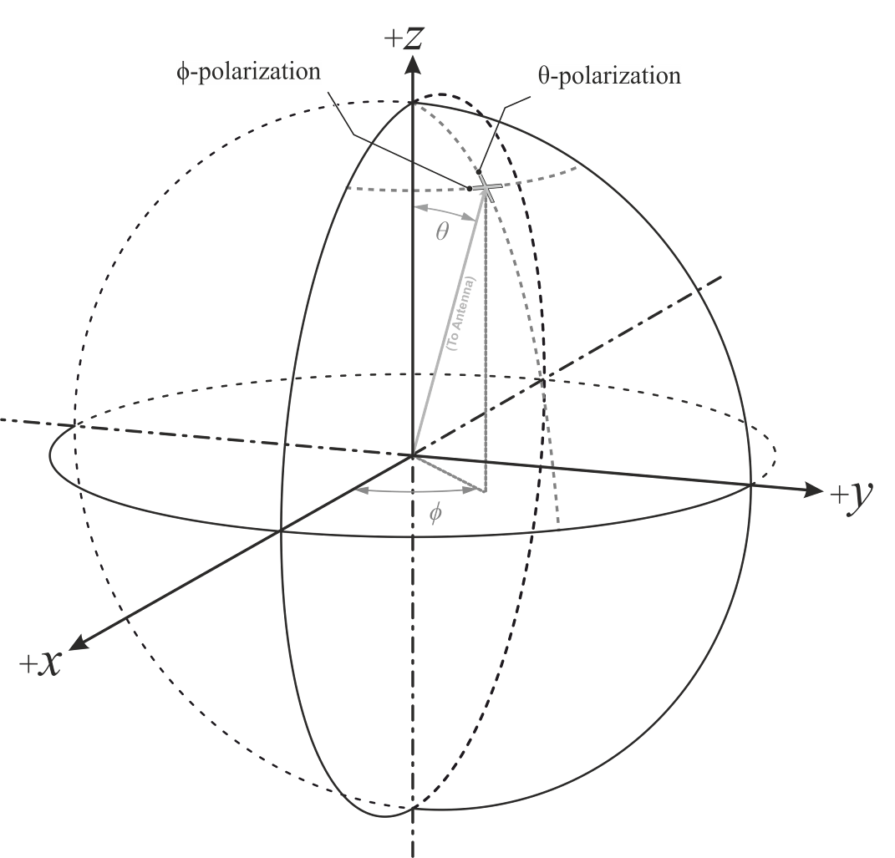
Figure A.1-1: Reference coordinate system
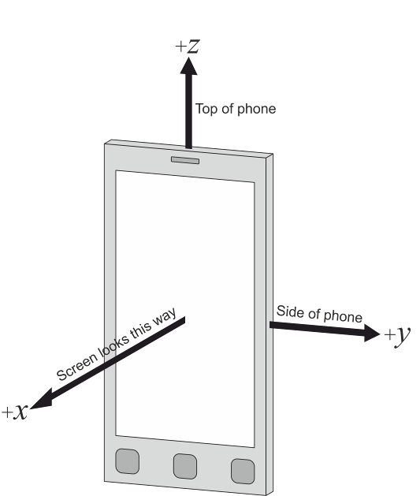
Figure A.1-2: DUT default alignment to coordinate system
The following aspects are necessary:
- A basic understanding of the top and bottom of the device is needed
in order to define unambiguous DUT positioning requirements for the
test, e.g., in the drawings used in this annex, the earpiece is on the
top center of the device (front), the three buttons are on the bottom of
the device (front) and the camera is on the top of the device
(back).
- An understanding of the origin and alignment of the coordinate
system inside the test system, i.e. the directions in which the x, y, z
axes point inside the test chamber, is needed in order to define
unambiguous DUT orientation and measurement angles.
Annex
B (informative): Estimation of measurement uncertainty
B.1 General
Individual uncertainty contributions in the TRP and TRS
measurements are discussed and evaluated in this Annex. A technique for
calculating the total measurement uncertainty is also presented.
An important part of a standard measurement procedure is the
identification of uncertainty sources and the evaluation of the overall
measurement uncertainty. There are various individual uncertainty
sources in the measurement procedure that introduce a certain
uncertainty contribution to the final measurement result. The approach
in this standard test procedure is that the test laboratories are not
limited to using some specific instruments and antenna positioners, for
example.
The TRP/TRS measurement procedure can be considered to include two
stages. In Stage 1 the calibration of the absolute level of the DUT
measurement results is performed by means of using a calibration antenna
whose absolute gain/radiation efficiency is known at the frequencies of
interest. In Stage 2 the actual measurement of the 3-D pattern of the
Device Under Test (DUT) is performed. The uncertainty contributions are
analysed in clause B.2 while the uncertainty budget and example tables
related to TRP and TRS are listed in clauses B.3 and B.4
respectively.
The calculation of the uncertainty contribution is based on the Guide
to the expression of uncertainty in measurement [10]. Each individual
uncertainty is expressed by its Standard Deviation (termed here as
‘standard uncertainty’) and represented by symbol U. The uncertainty
contributions can be classified to two categories: Type-A uncertainties,
which are statistically determined e.g. by repeated measurements, and
Type-B uncertainties, which are derived from existing data e.g. data
sheets. Several individual uncertainties are common in Stage 1 and Stage
2 and therefore cancel.
The procedure of forming the uncertainty budget is:
1) Compile lists of individual uncertainty contributions for TRP or
TRS measurement in both Stage 1 and Stage 2.
2) Determine the standard uncertainty of each contribution by
a) Determining the distribution of the uncertainty (Actual, U-shaped,
rectangular, etc.)
b) Determining the maximum value of each uncertainty (unless the
distribution is Actual)
c) Calculating the standard uncertainty by dividing the uncertainty
by \(\sqrt{2}\) if the distribution is
U-shaped, and by \(\sqrt{3}\) if the
distribution is rectangular.
3) Convert the units (if necessary) of each uncertainty element into
the chose unit, i.e. dB.
4) Combine all the standard uncertainties by the root-sum-squares
(RSS) method to derive the ‘combined standard uncertainty’.
5) Multiply the result by an expansion factor of 1.96 to derive
expanded uncertainty at 95% confidence level: \(1.96 \cdot U_{c}\).
The combination of uncertainties is performed using dB values for
simplicity. It has been shown that using dB uncertainty values gives a
slightly worse combined uncertainty result than using linear values for
the uncertainties. The analysis method therefore errs on the safe
side.
If the same chain configuration (e.g. including the measurement
receiver; the measurement antenna and other elements) is used in both
stages, the uncertainty is considered systematic and constant 🡪 0.00dB
value.
If it is not the case, this uncertainty contribution has to be
considered and determined by the following methods.
B.2.1.1
Mismatch uncertainty between measurement receiver / communication tester
and the measurement antenna
In a measurement configuration, when two elements (devices,
networks…) are connected, if the matching is not ideal, there is an
uncertainty in the RF level signal passing through the connection. The
magnitude of the uncertainty depends on the VSWR at the junction of the
two connectors. In practical measurement system there are probably
several connections in a test set-up, they will all interact and
contribute to the combined mismatch uncertainty.
The total combined mismatch uncertainty is composed of 2 parts:
1) The mismatch through the connector between two elements.
2) The mismatch due to the interaction between two elements.
B.2.1.1.1
Mismatch uncertainty through the connector between two elements
Hereunder, a measurement configuration:
Figure B.2.1.1.1-1: Mismatch uncertainty through the connector
\(\Gamma_{MR}\) is the complex
reflection coefficient of the Measurement Receiver. This term is also
applicable to the communication tester.
\(\Gamma_{cable4}\) is the complex
reflection coefficient of the cable4.
\(S_{21}\) is the forward gain in
the network between the two reflection coefficients of interest.
\(S_{12}\) is the backward gain in
the network between the two reflection coefficients of interest.
Note that \(S_{21}\) and \(S_{12}\) are set to 1 if the two parts are
directly connected.
The uncertainty limits of the mismatch are calculated by means of the
following formula (equation 6.1 of [11]):
These mismatch limits are divided by \(\sqrt{2}\) (equation 6.2 of [11]) because
of the U-shaped distribution of the mismatch uncertainty and give the
following standard uncertainty:
B.2.1.1.2
Mismatch uncertainty due to the interaction of several elements
Previously, we presented how to determine the mismatch uncertainty
between two elements through the junction (connector). Now, we introduce
the other type of mismatch uncertainty, which is a result of the
interaction between several elements.
Hereunder, a measurement configuration:
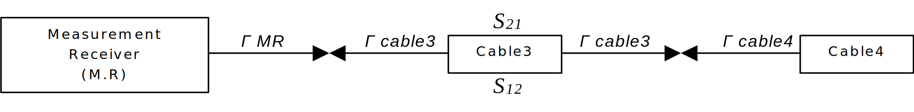
Figure B.2.1.1.1.2-1: Mismatch uncertainty due to the interaction of
several elements
Firstly, we determine the mismatch uncertainty between junctions of
the elements:
The two kinds of mismatch uncertainty contributions are combined by
the root-sum-squares (RSS) method to derive the total combined mismatch
uncertainty.
The total combined mismatch uncertainty is equal to:
This formula shows that the uncertainty is frequency dependent by the
way of the forward and the backward gains in the network between the two
components. The uncertainty upon \(\left|
S_{21} \right|\) and \(\left| S_{12}
\right|\) increases with frequency.
Note that for an anechoic chamber, horn antennas are frequently used
as measurement antennas. There are two kinds of horn antennas:
single-polarized and dual-polarized. With the second one, it is possible
to measure the co‑polarized and cross‑polarized signals without any
movement of the measurement antenna, which reduces the cable antenna
uncertainty contribution and improves the measurement stability.
To conduct the signals to the measurement receiver, the measurement
system configuration using a dual‑polarized horn antenna has to be
completed with an RF Relay. This device will include new mismatch
uncertainty contributions, which have to be determined with the
previously presented calculation methods, completed by the RF relay
parameters contributions, and described in the following.
B.2.1.2 Mismatch
uncertainty of the RF relay
If the same receiver chain configuration (including the measurement
receiver; the measurement antenna and other elements) is used in both
stages, the uncertainty is considered systematic and constant 🡪 0.00dB
value.
If it is not the case, this uncertainty contribution has to be
considered and determined by the following method.
The following figure describes the RF Relay with its S-parameters and
the complex reflection coefficient of the inputs and output:
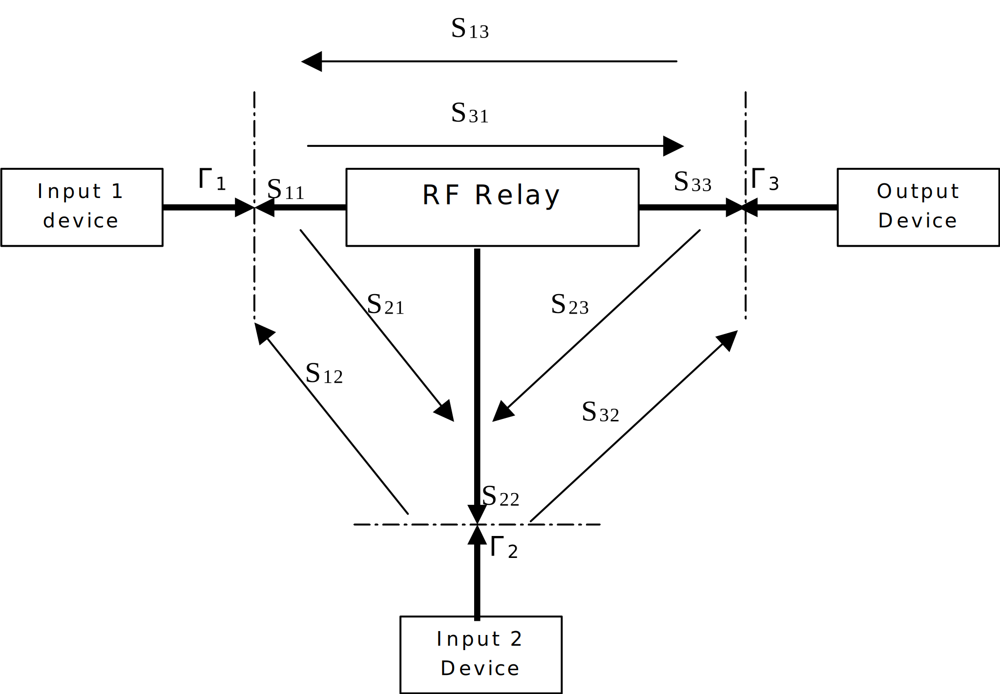
Figure B.2.1.2-1: Mismatch uncertainty of the RF relay
The RF relay is used to switchover the cross and direct polarization
signals from the measurement antenna. To determine RF Relay mismatch
uncertainty contributions, reflection coefficients for each port and the
cross-talk attenuation have to be known.
The total combined mismatch uncertainty is composed of two parts:
1) The mismatch uncertainty contributions when the RF Relay switches
on the direct polarization signal
2) The mismatch uncertainty contributions when the RF Relay switches
on the cross-polarization signal
Each part is composed of two types of uncertainties introduced in the
previous paragraph: the mismatch through the connector between two
elements and the mismatch due to the interaction between several
elements.
B.2.1.2.1
First part: RF Relay switched on the co-polarized signal
B.2.1.2.1.1
The mismatch through the connector between two elements
The RF Relay switchovers on the cross-polarization signal. As a
result; this uncertainty contribution is usually disregarded because of
the high crosstalk attenuation which is characterized by \(\left| S_{21} \right|\) and \(\left| S_{12} \right|\) S-parameters. If
the crosstalk attenuation is low, this uncertainty contribution has to
be considered.
The RF Relay switchovers on the cross polarization signal. As a
result; this uncertainty contribution is usually disregarded because of
the high cross-talk attenuation, which is characterized by \(\left| S_{23} \right|\) and \(\left| S_{32} \right|\) S-parameters. If
the crosstalk attenuation is low, this uncertainty contribution has to
be considered.
B.2.1.2.2
Second part: RF relay switched on the cross-polarized signal
B.2.1.2.2.1
The mismatch through the connector between two elements
Between the Input1 and the port1: the RF Relay switchovers on the
direct polarization signal. As a result, there is no mismatch
uncertainty contribution.
The RF Relay switchovers on the cross-polarization signal. As a
result; this uncertainty contribution is usually disregarded because of
the high crosstalk attenuation which is characterized by \(\left| S_{31} \right|\) and \(\left| S_{13} \right|\) S-parameters. If
the crosstalk attenuation is low, this uncertainty contribution has to
be considered.
The RF Relay switchovers on the cross-polarization signal. As a
result; this uncertainty contribution is usually disregarded because of
the high crosstalk attenuation which is characterized by \(\left| S_{21} \right|\) and \(\left| S_{12} \right|\) S-parameters. If
the crosstalk attenuation is low, this uncertainty contribution has to
be considered.
Each non-zero mismatch uncertainty contribution from both parts (RF
Relay switched on the cross and direct polarization signal) are combined
by the root-sum-squares (RSS) method to derive the total combined
mismatch uncertainty.
The total combined mismatch uncertainty is equal to:
If a RF Relay is used to drive the cross and direct polarization
signals from the dual-polarized antenna, this total combined mismatch
uncertainty has to be added with all the uncertainty measurement
contributions for the total combined measurement uncertainty.
B.2.2 Insertion loss
B.2.2.1
Insertion loss of the measurement antenna cable
If the measurement antenna cable does not move between the
calibration and the DUT measurement stage, the uncertainty due to the
insertion loss of the cable is assumed to be systematic. Moreover, this
uncertainty is common and constant in both stages and that is why this
leads to 0.00dB value.
If a different cable is used in the calibration measurement and in
the DUT measurement, and the difference of the insertion loss is used in
the calculations, then the overall combined standard uncertainty of the
insertion loss measurement should be used in the uncertainty budget. The
distribution of this uncertainty is assumed to be rectangular, in which
case the standard uncertainty can be calculated as the maximum value
divided by \(\sqrt{3}\).
B.2.2.2
Insertion loss of the measurement antenna attenuator (if used)
See Insertion loss of the measurement antenna cable
If the measurement antenna attenuator is used in both stages, the
uncertainty is considered systematic and constant 🡪 0.00dB value.
B.2.2.3
Insertion loss of the RF relays (if used)
See Insertion loss of the measurement antenna cable.
If the RF relay is used in both stages, the uncertainty is considered
systematic and constant 🡪 0.00dB value.
If a calibration antenna attenuator is used, it only appears in Stage
1. As a result, this uncertainty has to be considered.
This uncertainty will be calculated from the manufacturer’s data in
logs with a rectangular distribution (see clause 5.1.2 in [11]).
B.2.3 Influence of the
antenna cable
B.2.3.1 Measurement antenna
cable
If the measurement antenna is directional (i.e. peak gain >+5dBi
e.g. horn, LPDA, etc.) and the same measurement antenna cable
configuration is used for both stages, the uncertainty is considered
systematic and constant 🡪 0.00dB value.
B.2.3.2 Calibration antenna
cable
If an efficiency calibration is performed, influence of the
calibration antenna feed cable can be assumed to be negligible, due to
data averaging.
In the case of gain calibration, the influence of the calibration
antenna feed cable must be assessed by measurements. A gain calibration
measurement is repeated with a reasonably differing routing of the feed
cable. Largest difference between the results is entered to the
uncertainty budget with a rectangular distribution.
B.2.4
Measurement receiver: uncertainty of the absolute level
The receiving device is used to measure the received signal level in
TRP tests either as an absolute level or as a relative level. Receiving
device used is typically a communication tester, spectrum nalyser (SA),
or power meter (PM). Generally, there occurs an uncertainty contribution
from limited absolute level accuracy and non-linearity.
This uncertainty will be determined from the manufacturer’s datasheet
and the distribution used (see clause 5.1.2 in [11]) shall match that
provided in the datasheet. In the absence of a declared distribution in
the datasheet, the rectangular distribution should be used.
B.2.5
Communication tester: uncertainty of the absolute level
The transmitter device (typically a communication tester or BS
simulator) is used to drive a signal to the measurement antenna in
sensitivity tests either as an absolute level or as a relative level.
Receiving device used is the UE. Generally, there occurs uncertainty
contribution from limited absolute level accuracy and non-linearity of
the communication tester.
For practical reasons, the calibration measurement (Stage 1) should
be only performed with the measurement antenna as a receiver. Hence, the
uncertainty on the absolute level of the transmitter device cannot be
assumed as systematic. This uncertainty will be determined from the
manufacturer’s datasheet and the distribution used (see clause 5.1.2 in
[11]) shall match that provided in the datasheet. In the absence of a
declared distribution in the datasheet, the rectangular distribution
should be used. Furthermore, the uncertainty of the non-linearity of the
device is included in the absolute level uncertainty.
When output power of the communication tester is swept to reach the
throughput target that defines the sensitivity threshold, used power
step resolution creates this uncertainty. Output power step used in the
sensitivity measurement is divided by factor 2 and then a rectangular
distribution applied to obtain the uncertainty.
B.2.7 Measurement distance
The uncertainty contribution from a finite measurement distance is
estimated in three parts. The two three elements of mismatch uncertainty
contributions are combined by the root-sum-squares (RSS) method to
derive the total combined mismatch uncertainty.
B.2.7.1
Offset of phase centre from axis(es) of rotation
B.2.7.1.1
Offset of DUT phase centre from axis(es) of rotation
In all the measurements defined in this test procedure the DUT and
phantom combination is rotated about the ear reference point of SAM
phantom, which is also assumed to be the location of the phase centre in
both angular directions of the measurements.
For some positioning systems this may be practically impossible in
which case a measurement uncertainty contribution can arise because the
phase centre will rotate on a non-zero radius about the centre of
rotation, thereby giving a variable measurement distance. Data averaging
process may lead to a partial self-cancel of this uncertainty.
The uncertainty limits of this effect are calculated by means of the
following formula (uj22 of [12]):
Because of the phase center can be anywhere between the offset
limits, the distribution is assumed to have a rectangular and the phase
center limit is divided by \(\sqrt{3}\)giving the following standard
uncertainty:
B.2.7.1.2
Offset of calibration antenna phase centre from axis(es) of
rotation
If a gain calibration is performed in Stage 1 with a directive
antenna (e.g. horn antenna), the uncertainty contribution of calibration
antenna’s phase centre displacement is estimated by means of the
following formula (uj21 of [12]):
Because of the phase center can be anywhere between the offset
limits, the distribution is assumed to have a rectangular distribution
and the phase center limit is divided by \(\sqrt{3}\)giving the following standard
uncertainty:
If a gain calibration is performed in Stage 1 with omnidirectional
calibration antenna (e.g. sleeve dipoles), uncertainty should be 0.00 dB
provided that care is taken in their positioning since the phase centre
are easily identifiable.
For an efficiency calibration with an omnidirectional calibration
antenna, the \(U_{phase\ centre\
offset}\) is calculated similarly as for gain calibration but the
uncertainty may be divided by factor 2. This is due to correcting impact
of data averaging in this type of calibration.
B.2.7.2 Mutual coupling
In measurement of radio performances of UMTS mobile phones in speech
mode, the mutual coupling uncertainty for this frequency band is a
0.00dB value (see annex A.2 in [13]).
The 0.00dB value can be extended for NR FR1 band frequencies.
B.2.7.3 Phase curvature
This uncertainty originates from the finite far-field measurement
distance, which causes phase curvature across the DUT. If the minimum
measurement distance is respected, this error is assumed to be
negligible..
B.2.8 Quality of quiet zone
The uncertainty contribution due to unwanted reflections and
obstructions within the anechoic chamber, including imperfect absorber
treatments and the impact of positioning equipment support structure, is
determined from data acquired using the ripple test methodology in
clause 7.4. This data consists of single-axis pattern cuts that
represent the sum of direct and reflected rays from a highly symmetrical
omnidirectional radiation pattern measured at various points throughout
the test volume. The data must be measured in sufficient spatial or
angular resolution to accurately capture the peaks and nulls of the
pattern to within a small fraction of the overall ripple contribution.
In general, the worst-case peak-to-null ripple will reflect the
potential error in a peak EIRP or EIS measurement for an omnidirectional
DUT pattern located anywhere within the test volume. Note however that
nulls in the pattern can exhibit considerably larger errors due to
reflected signals being stronger than the line-of-sight signal from the
null.
When measuring the range path loss in Stage 1 using a dipole pattern,
the associated measurement uncertainty may be determined from the
peak-to-null ripple, after relative path loss compensation, of a single
radial offset ripple test, where the range is configured as for range
calibration (e.g. with any extraneous support structure removed) using a
rectangular distribution.
For spherically integrated quantities such as TRP and TRS, the
peak-to-null ripple would overestimate the measurement uncertainty due
to the inherent averaging of the various peaks and nulls as the
spherical pattern is integrated. In this case, the surface standard
deviation (SSD) [15] is used to obtain a statistical representation of
the expected impact of ripple on the integrated power from an isotropic
radiator placed anywhere within the test volume. Due to the
impracticality of maintaining a constant path loss reference between
individual ripple test cuts, each resultant pattern is treated
individually and then the worst case SSD result is chosen as the
standard uncertainty of the quiet zone.
For the phi-axis ripple tests, the pattern can be considered an
equatorial (theta = 90°) cut of the isotropic pattern where every point
has equal weighting on an evenly spaced spherical surface. Thus, the
standard deviation of the single cut should be equivalent to the
standard deviation of the entire spherical surface. Defining \(p_{k}\) as the \(k\)th ripple measurement point in linear
power units \(\left( p_{k}\ = \ 10^{\left(
\frac{P_{k}\left( \text{dB} \right)}{10} \right)} \right)\), and
\(\overline{p}\) as the average of all
\(p_{k}\) values in the associated
ripple test, then the standard deviation of the corresponding cut is
given by:
On the theta-axis ripple test each ripple test cut can be considered
as a great circle cut through an isotropic pattern with the symmetrical
distortions that would be produced by revolving the pattern about the
phi (0-180°) axis. Thus, it becomes apparent that ripple near the poles
impacts a smaller total surface area on the sphere than that near theta
= 90 and 270°. In this case, sin(theta) weighting is used to generate
the spherical surface weighted standard deviation as:
Note that this equation simplifies to the previous equation when
theta = 90°, so the two formulations are in fact the same, regardless of
which orientation of the ripple test is used.
The standard uncertainty for the quiet zone ripple contribution to
the TRP/TRS measurement is then given by the maximum SSD from all of the
ripple test measurements.
B.2.9 DUT Tx-power drift
A single point power reference measurement in the beginning and at
the end of the measurement procedure is recommended to monitor the power
drift of the DUT. Based on TX-power drift measurements for typical 3G
UE, an uncertainty of 0.2 dB shall be entered to uncertainty budget with
a rectangular distribution. If the drift measurement indicates larger
drift, the actual drift shall be included to uncertainty.
In order to minimize Tx-power drift error it is recommended to
interleave sensitivity and power measurement of multiple channels. This
spreads the measurements over a longer period, which helps to average
the drift of the TX-power.
Typical TX-power drifts of 3G UE, measured in a single angular point,
DUT placed against phantom head are shown in Figure B.2.9-1.
Figure B.2.9-1: Output power variation of typical 3G UE during
battery life
B.2.10 DUT sensitivity drift
Due to statistical uncertainty of sensitivity measurement, drift in
the TRS cannot be monitored similarly to TRP. An uncertainty value of
0.2dB can be used with a rectangular distribution, or the TRS drift
should be measured, with a setup corresponding to the actual TRS
measurement.
B.2.11
Uncertainty related to the use of phantoms
B.2.11.1
Uncertainty from using different types of SAM phantom
This uncertainty contribution originates from the fact that different
laboratories may use the two different versions of SAM head: the SAM
head phantom or the SAM phantom including the head and the shoulders.
The standard SAM head is the specified phantom. However, the use of the
other type of SAM is also allowed with the requirement that the
resulting uncertainty contribution is considered in the uncertainty
budget.
B.2.11.2 Simulated
tissue liquid uncertainty
This uncertainty will occur, if the laboratory uses a liquid which
has dielectric parameters deviating more than ±15% of the target
parameters.
B.2.11.3
Uncertainty of dielectric properties and shape of the hand phantom
The hand phantom contributes to OTA measurement uncertainty due to
the manufacturing tolerances of its dielectric properties and shape. The
dielectric properties on the surface of the hand may differ from those
of its interior, so both are included in the evaluation. The moulded
exterior surface of the hand shall be measured directly with an
open-ended coaxial probe. The interior hand material is evaluated
indirectly, by substituting a cube-shaped sample moulded from the same
material and having some exterior surfaces removed. Following procedure
will be used to evaluate the dielectric properties of the hand
phantom;
1. Each hand shall be manufactured together with a reference cube of
the same material. The sides of the reference cube shall be not less
than 40 mm in length.
2. The moulded surface on three orthogonal sides of the cube shall be
sliced away to a depth of at least 3 mm, in order to expose interior
material for evaluation. The remaining three sides of the cube shall be
left untreated.
3. Relative permittivity and conductivity shall be measured at ten
different points on each of the three cut, exposed surfaces of the
reference cube, and the combined interior averages (\({\varepsilon_{int}}_{avg}\), \(\sigma_{{int}_{avg}}\), 30 points) and
standard deviations (\({\varepsilon_{int}}_{std}\),\(\sigma_{{int}_{std}}\),30 points) shall be
calculated. Individual interior averages for each of these three sides
(\({\varepsilon_{int}}_{i}\),\(\sigma_{{int}_{i}}\),10 points) shall also
be calculated.
4. Relative permittivity and conductivity shall be measured at ten
points on the hand phantom exterior. A measurement point shall be
located to each fingertip or as close to the tip as applicable. One
measurement point shall be located to the back of the hand and one to
the inner surface of wrist area. The exterior averages (\(\varepsilon_{ext\_ avg}\), \(\sigma_{ext\_ avg}\), 10 points) and
standard deviations (\(\varepsilon_{ext\_
std}\), \(\sigma_{ext\_ std}\),
10 points) calculated accordingly.
5. The total averages (\(\varepsilon_{avg}\) , \(\sigma_{avg}\)) shall be calculated as the
average of exterior and interior values by either evaluating all data
points or using equations :
6. The total standard deviations (\(\varepsilon_{std}\) , \(\sigma_{std}\)) shall be calculated as the
statistical combination of exterior and interior values by either
evaluating all data points or using equations:
7. The hands are acceptable for radiated performance testing, i.e.,
meet the minimal requirements, if
a. \(\varepsilon_{avg}\ \)deviates
by less than 15% from the target values
b. \(\sigma_{avg}\) deviates by less
than 25% from the target values
c. the difference between the averaged permittivity of each 10-point
interior surface \(\varepsilon_{int\_
avg}\) deviates by less than 10% and \(\varepsilon_{ext\_ avg}\) by less than 20%
from the total average \(\varepsilon_{avg}\)
d. the difference between the averaged conductivity of each 10-point
interior surface\(\sigma_{int\_ avg}\)
deviates by less than 20% and \(\sigma_{ext\_
avg}\) by less than 30% from the total average \(\sigma_{avg}\)
e. the standard deviation of the combined measurements (30 interior
points and 10 exterior points) is less than 20% for permittivity \(\varepsilon_{std}\) and less than 40% for
conductivity \(\sigma_{std}\)
8. For the hands meeting the minimal requirements of step 7, the
following approximations shall be used to determine the hand uncertainty
due to dielectric properties.
\({\mathrm{\Delta}\varepsilon}_{avg}\), \(\mathrm{\Delta}\sigma_{avg}\), \(\varepsilon_{std}\), \(\sigma_{std}\) are the values determined as
defined above and \(\varepsilon_{unc}\)
and \(\sigma_{unc}\) are expanded
measurement uncertainties (k = 2) of the dielectric parameter
measurement method. The cube will be provided together with the hand
such that the user can evaluate if the interior (cube) properties of the
hand has degenerated over time by performing the test above. Coefficient
\(c_{1} = 0.78\), \(c_{2} = 0.39\) and \(a_{1} = 0.50\) were determined by numeric
simulations.
In case the hand phantoms are manufactured within CAD models, the
tolerance is 2% and therefore the effects shape errors are negligible.
If the tolerance is larger, a numerical study must be conducted.
B.2.11.4
Uncertainty from using different types of Laptop Ground Plane
phantom
This uncertainty contribution originates from the fact that different
laboratories may use different variations of Laptop Ground Plane
phantom. The standard Laptop Ground Plane is the specified phantom.
B.2.12 Coarse sampling grid
Decreasing of sampling density to finite number of samples affects
the measurement uncertainty by two different errors. First is due to
inadequate number of samples and second is a systematic discrimination
approximation error in TRP and TRS equations.
Figure B.2.12-1 shows simulated sampling grid errors for typical 3G
UE. Approximation error is not included. Simulations are based on thin
plate surface interpolation of real radiation patterns, measured beside
a phantom head.
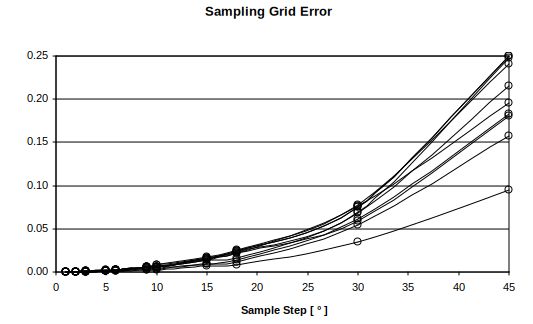
Figure B.2.12-1: Simulated TPR/TRS error as a function of sampling
grid
The offset of systematic approximation error can be expressed by
using formula
\(N\) is number of angular intervals
in elevation,
\(\theta_{n}\) is elevation.
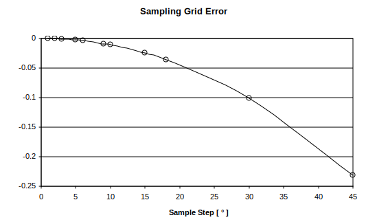
Figure B.2.12-2: Approximation error of TRP/TRS
The 15° sampling grid used in TRP measurements has been shown to
introduce only very small differences as compared to the results
obtained with denser grids, so with that sampling grid the uncertainty
contribution can assumed negligible.
When using sample step size of 15° - 30°, standard uncertainty of
0.15dB can be assumed to cover errors. If step size >30° is used,
larger uncertainty should be considered.
B.2.13 Random uncertainty
The random uncertainty characterizes the undefined and miscellaneous
effects which cannot be forecasted. One can estimate this type of
uncertainty with a repeatability test by making a series of repeated
measurement with a reference DUT without changing anything in the
measurement setup.
The random uncertainty differs from one laboratory to another.
Moreover, each DUT has its own electromagnetic behaviour and random
uncertainty. Some uncertainty also occurs from the positioning of the
DUT against the SAM phantom, as the DUT cannot be attached exactly in
the same way every time. This uncertainty depends on how much the DUT’s
positioning against the SAM phantom and hand phantoms varies from the
specified testing positions. It is noted that the uncertainty of the
phone positioning depends on the phone holder and the measurement
operator and is in fact difficult to distinguish from random
uncertainty. Some uncertainty also occurs from the positioning of the
DUT plugged into the Laptop Ground Plane phantom, as the DUT may not be
plugged into the USB connector and positioned exactly in the same way
every time. This uncertainty depends on how much the DUT’s position
plugged into the Laptop Ground Plane phantom varies from the specified
plug-in position. Therefore, the positioning uncertainty is included in
random uncertainty.
To estimate this uncertainty for the SAM phantom, it is suggested to
perform at least five evaluations of TRP/TRS whereby the device shall be
dismounted and newly positioned with a fully charged battery before each
test. This measurement set has to be carried out in mid channel of
lowest and highest frequency bands utilized by the testing lab, for at
least three phones with different type of mechanical design. The values
have to be normalized by the mean for each measurement set. As a result,
the uncertainty contribution entered to uncertainty budget is the
difference between the maximum and minimum normalized values.
With head and hand phantoms, random uncertainty evaluation may be
done separately for each measurement configuration i.e. head only,
browsing mode or speech mode. A speech mode random uncertainty
evaluation, were both head and hand phantoms are used, can reasonably be
considered to be the worst-case scenario and thus random uncertainties
in other configurations to be less.
To estimate this uncertainty for the Laptop Ground Plane phantom, it
is suggested to perform at least five evaluations of TRP/TRS for the
plug-in position whereby the device shall be dismounted and newly
positioned before each test. This measurement set has to be carried out
in mid channel of lowest and highest frequency bands utilized by the
testing lab, for at least three USBs with different type of mechanical
design. The values have to be normalized by the mean for each
measurement set. As a result, the uncertainty contribution entered to
uncertainty budget is the difference between the maximum and minimum
normalized value.
B.2.14 Frequency response
Test systems might not be able to ensure flat frequency response
across the entire channel bandwith required for testing (e.g. up to
100MHz for NR FR1). When a frequency response correction based on the
results from the system calibration measurements in Stage 1 is not
possible or practical, this uncertainty has to be considered.
This uncertainty term can be estimated as described in [14] using the
following formula:
where \(\varepsilon_{j}\ \)is the
expected relative error in the average power result for a given channel
in dB, \(PLj\), is the linear path loss
at the center frequency of the given channel, \(PLk\), is the linear path loss at each
frequency point across the corresponding channel, and N is the
number of frequency steps across a given channel bandwidth. The maximum
deviation \(\varepsilon_{j}\ \)across
all of the possible channels in a band shall be used to estimate the
required frequency response uncertainty contribution with a rectangular
distribution.
This error may be removed directly at each frequency,
fj, by using the average path loss across the
channel as the range loss correction rather than the path loss at the
center frequency as described in [14].
For sensitivity measurements, this effect is included in the output
level step resolution.
B.2.15 Uncertainty of
network nalyser
This uncertainty includes the all uncertainties involved in the S21
measurement with a network nalyser, and will be determined from the
manufacturer’s datasheet and the distribution used (see clause 5.1.2 in
[11]) shall match that provided in the datasheet. In the absence of a
declared distribution in the datasheet, the rectangular distribution
should be used.
B.2.16
Uncertainty of the gain/efficiency of the calibration antenna
The calibration antenna only appears in Stage 1. Therefore, the
gain/efficiency uncertainty has to be considered.
This uncertainty will be determined from the manufacturer’s datasheet
and the distribution used (see clause 5.1.2 in [11]) shall match that
provided in the datasheet. In the absence of a declared distribution in
the datasheet, the rectangular distribution should be used.
Alternatively, the uncertainty could come from a calibration report with
traceability to a National Metrology Institute with measurement
uncertainty budgets generated following the guidelines outlined in
internationally accepted standards
If the manufacturer’s data do not give the information, the value has
to be checked, see annex A.12 in [13].
B.3 Total Radiated Power
(TRP)
The uncertainty contributions related to TRP are listed in Table
B.3-1. A preliminary example uncertainty budget is presented in Table
B.3-2.
Table B.3-1 Uncertainty contributions in TRP measurement for anechoic
chamber method
Manufacturer’s uncertainty calculator,
covers NA setup
0.5
Rectangular
1.73
1
0.29
14
Mismatch of transmitter chain
Taken in to account in VNA setup
uncertainty
0
U-shaped
1.41
1
0.00
15
Insertion loss of transmitter chain
Systematic with Stage 2 (=>
cancels)
0
Rectangular
1.73
1
0.00
16
Mismatch in the connection of
calibration antenna
Taken in to account in VNA setup
uncertainty
0
U-shaped
1.41
1
0.00
17
Influence of the calibration antenna
feed cable
Gain calibration with dipole
0.3
Rectangular
1.73
1
0.17
18
Influence of the measurement antenna
cable
Systematic with Stage 2 (=>
cancels)
0
Rectangular
1.73
1
0.00
19
Uncertainty of the absolute gain/
radiation efficiency of the calibration antenna
Calibration certificate
0.5
Rectangular
1.73
1
0.29
20
Measurement distance
Dipole: aligned with phase center
0
Rectangular
1.73
1
0.00
21
Quality of quiet zone
Peak-to-null ripple
0.5
Rectangular
1.73
1
0.29
Combined standard
uncertainty
1.12
Expanded uncertainty
(Confidence interval of 95 %)
2.20
Annex C:
Environmental requirements
C.1 Scope
The requirements in this clause apply to all types of UE(s) in FR1
for SA and EN-DC mode.
C.2 Ambient temperature
All the test cases defined in this technical report should be
measured in room temperature e.g. 25°C.
C.3 Operating voltage
For FR1 TRP TRS, test cases shall be performed with the DUT operated
in stand-alone battery powered mode. It is preferable if the UE is fully
charged in the beginning of the Test.
Annex D:
Phantom Definition
D.1 Head Phantom
The basic head phantom is based on the “SAM” head phantom in IEEE Std
1528-2003, which is also described in TS 37.544 Annex A.2 [17]. For TRP
TRS test, the IEEE SAM head model has been extended with the neck
region, which is specified in CTIA Certification OTA Test Plan [14].
The Head phantom defined in CTIA Certification OTA Test Plan section
C.2 [14], is used for FR1 TRP TRS testing in this technical report.
The PDA Grip Hand described in TS 37.544 Annex A.2.2 [17], which is
identical to that defined in CTIA Certification OTA Test Plan section
C.4.8 [14], is adopted for TRP TRS testing for the UE with width ≥56mm
and ≤72mm.
D.2.2 Wide Grip Hand
The Wide Grip hand defined in CTIA Certification OTA Test Plan
section C.4.9 [14], is used for FR1 TRP TRS testing for UE with Width
>72mm and ≤92mm in this technical report.
E.1
Test methodology and configurations for UE with UL Tx Diversity
This clause defines the OTA test methodology for UE working at Tx
Diversity mode, the test method is FFS. FFS whether ULFPTx is considered
or not.
E.2
Test methodology and configurations for UE with Tx antenna switch
ON
The UE antenna switch mechanism depends on various of the influenced
factors which may trigger the software algorithm to decide antenna
switching status. The considered influenced factors with priority are
described in Table E.2-1.
Table E.2-1 The influenced factors with priority for Tx antenna
switch ON
Factor ID
Potential Influence factors
Priority
Factor 1
Downlink Rx signal
High
Factor 2
Near-body/object sensor
Low
Factor 3
USIM card setting
Low
Factor 4
Base station signalling
TBD
Factor 5
Particular optimization algorithms
TBD
Factor 6
Efficacy of the TAS ON methodology (i.e. ability to rank devices
based on lab test to be correlated to ranking based on field
performance)
NA
Note: Other influenced factors, if any, will be included in future
releases.
For the high priority influenced factor, i.e. Downlink Rx signal, the
potential effective approach to trigger Tx antenna switch algorithm is
that combining the measurement antenna and the link antenna to be one
unified antenna in the OTA chamber (FFS the downlink signal power level
and control algorithm). Furthermore, introducing a dwell or wait time
between the change in DL direction and the power measurement to ensure
the switching state stable in the measurement procedure will be
considered.
The test method for Tx antenna switch ON is FFS.
E.3
Test methodology and configurations for UE with multi antenna
receivers
For TRS measurement, no specific setting is needed for Rx antennas,
as described in Clause 8.3.2.
Annex F
(informative):
Change history
Change
history
Date
Meeting
Tdoc
CR
Rev
Cat
Subject/Comment
New version
2021-05
RAN4#99-e
R4-2108625
Initial Skeleton
0.0.1
2021-08
RAN4#100-e
R4-2113985
Implemented the following text
proposal:
R4-2113975 TP to TR38.834 on general aspects
0.1.0
2021-11
RAN4#101-e
R4-2119176
Implemented the following test
proposals:
R4-2119178 TP to TR38.834 on UE coordinate system
R4-2120686 TP to TR 38.834 on general aspects and band parameters
R4-2120688 TP to TR 38.834 on SA test setup and calibration
procedure